Board of Trustees
| 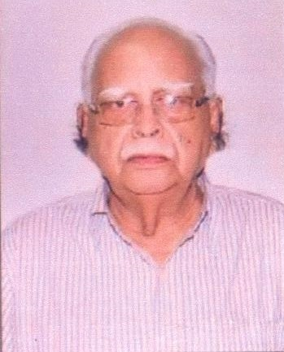 | Shri V.B.Upadhyay, Chairman, Board Of Trustees
Senior Advocate, Allahabad High Court, 4,Jawahar Lal Nehru Marg, ALLAHABAD- 211002. |
| 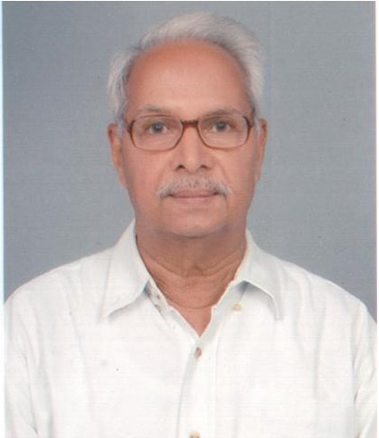 | Prof. A.N.Tripathi, Managing Trustee
Distinguished Professor, BHU Former Professor of Electrical Engg. IT- BHU, Founder Coordinator, Malaviya Centre for Ethics and Human Values, BHU, B 31/35-22, Sankat Mochan Colony, VARANASI-221005. Tel.- 0542-2368937, Email: trustkesari@gmail.com |
| 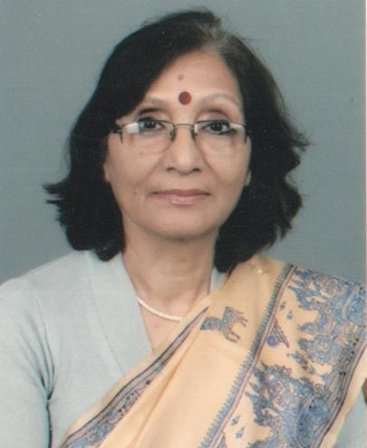 | Prof. Vibha Tripathi, Joint Managing Trustee
Emeritus Professor, Dept. of Ancient Indian History, Culture and Archaeology, BHU, B 31/35-22, Sankat Mochan Colony, VARANASI-221005 Mob.- 9453312719 # e-mail- vibhahist@gmail.com |
| 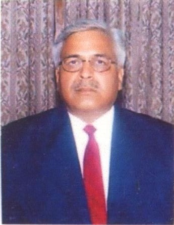 | Justice Abhinav Upadhyay
Judge, High court of Judicature, at Allahabad |
| 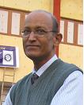 |
Prof. S.C.Lakhotia
Distinguished Professor, Dept. of Zoology, Faculty of Science, BHU |
| 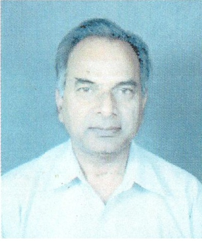 | Prof. S.N.Upadhyay
DAE-Raja Ramanna Emeritus Fellow, IIT-BHU Former Professor, Chemical Engg. Dept., IT-BHU Former Director, IT-BHU Former Co-ordinator, Malaviya Centre of Ethics and Human Values, BHU |
| 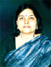 | Prof. Chandrakala Padia
Former Vice Chancellor, Maharaja Ganga Singh University, Bikaner Professor, Dept. of Political Science Faculty of Social Science, BHU |
| 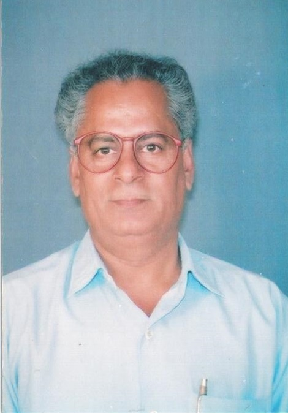 | Prof. Awadhesh Pradhan
Professor, Dept. of Hindi, Faculty of Arts, BHU |
| 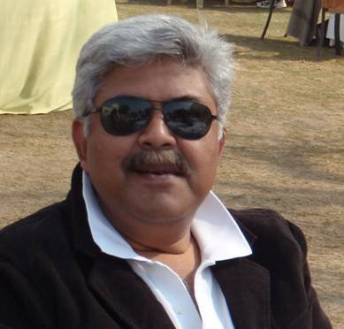 | Shri Abhijit Upadhyay
Entrepreneur |
| 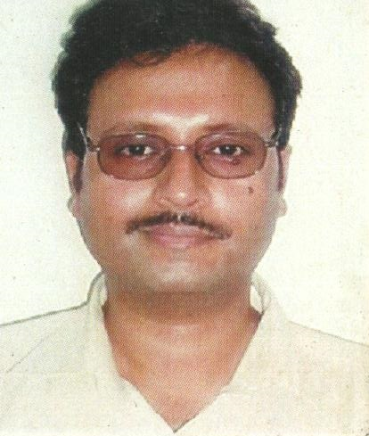 | Dr. Amit Tripathi
Entrepreneur |
| 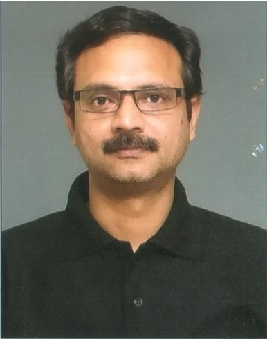 | Shri Avijit Tripathi
Entrepreneur |
| 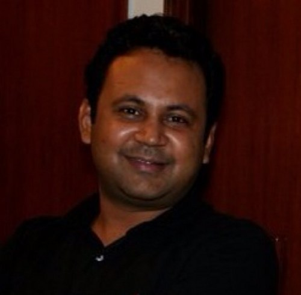 |
Prashant Gupta
Entrepreneur |